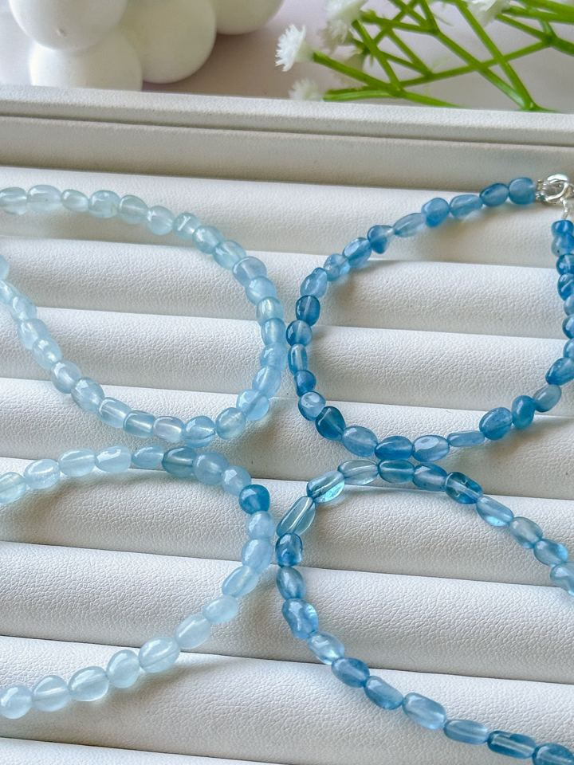
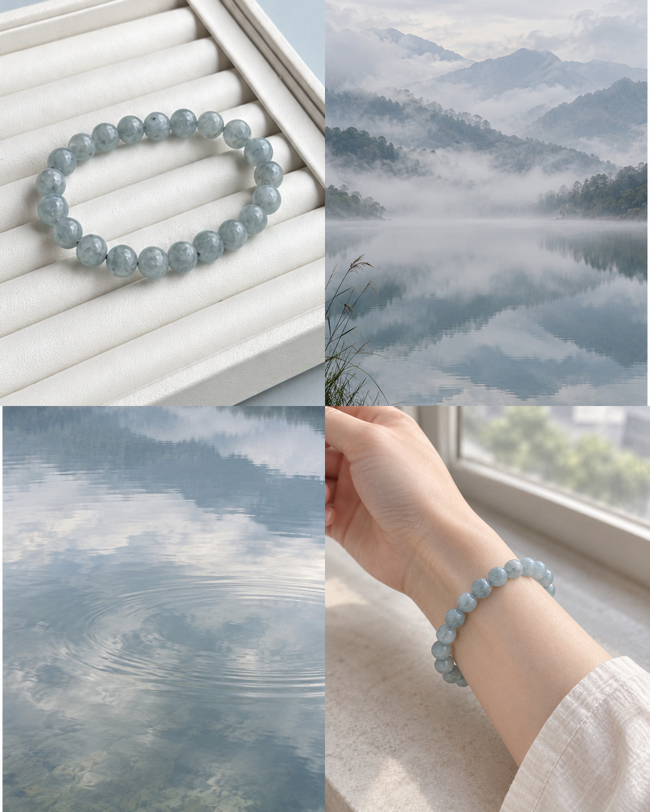
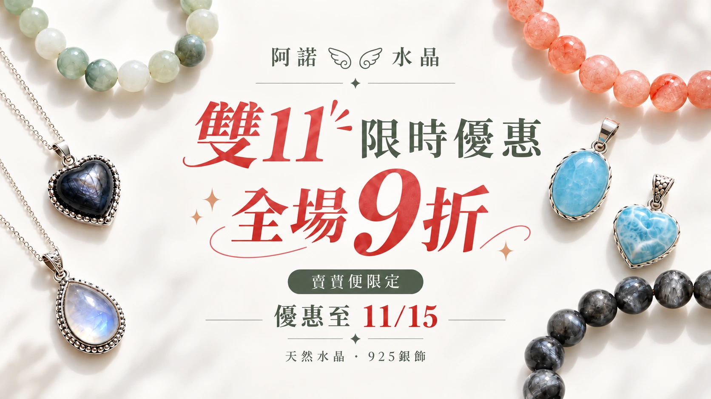
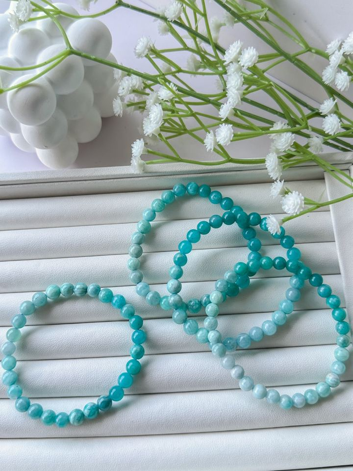
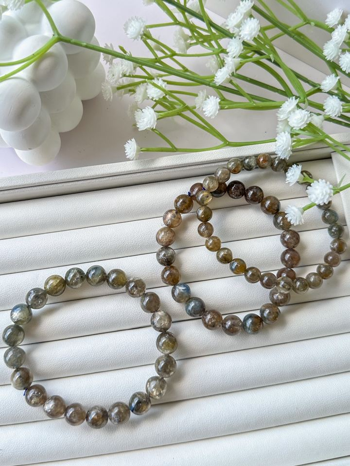
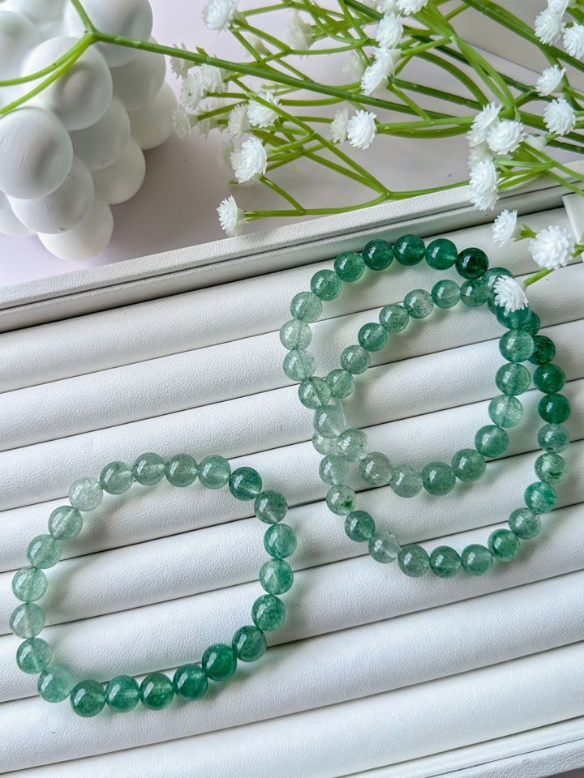

查看款式 ↗漸變糖豆海藍寶
NT$320 起

CRYSTAL BEGINNER GUIDE
從挑選、尺寸到日常保養，
把想知道的事，一篇篇慢慢看。
從喜歡的款式開始，認識珠徑、手圍與下單前要確認的事。
閱讀指南 02 · 顏色與搭配依照日常穿搭與喜歡的感覺，慢慢找到適合自己的色系。
閱讀指南 03 · 尺寸與手圍用六張圖看尺寸差異，了解疊戴搭配、量手圍與鬆緊預留。
閱讀指南 04 · 日常保養可以碰水嗎？日常清潔、佩戴與收納，從這裡開始了解。
閱讀指南 05 · 處理與觀察過度染色與正常優化處理不一樣，認識觀察重點與判斷限制。
閱讀指南 06 · 選購小幫手想挑單款、認識盲盒或詢問款式，整理好下一步的入口。
閱讀指南再多認識一點 · 礦石百科
看實拍、認識紋理與產地背景，找到喜歡的日常搭配。

11/01–11/15｜賣貨便限定・下單時先領優惠券 活動詳情 →
A LITTLE SOMETHING FOR EVERY DAY

查看款式 ↗NT$320 起

查看款式 ↗NT$280 起

查看款式 ↗NT$490 起

查看款式 ↗NT$370 起
售價、現貨與尺寸，以賣場當下說明為準。
FIND YOUR CRYSTAL
不知道怎麼選？
可以從顏色、心情或想呈現的感覺開始。
先選一個喜歡的顏色，讓相遇簡單一點。
SLOW DAYS, LITTLE DISCOVERIES
天然的礦物，不該只有等級的區分。
比起只看等級，阿諾更喜歡不同顏色、
不同紋理與特色。把喜歡的礦物帶進生活，
搭配每個人獨一無二的樣子。